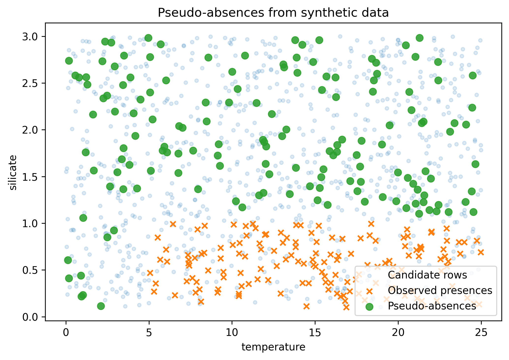

Pseudo-absence generation#
In this example we use a small synthetic dataset to show pseudo-absence generation in environmental space. Presences are restricted to warmer, lower-silicate conditions, and pseudo-absences are sampled outside the area of applicability.
Running the example#
Before running the Python script we need to import the required packages and define the synthetic dataset. The candidate rows span temperature from 0 to 25 and silicate from 0.1 to 3. Observed presences are then selected from rows with temperature above 5 and silicate below 1.
Loading dependencies#
import os
import matplotlib.pyplot as plt
import numpy as np
import pandas as pd
from abil.pseudo_generation import generate_pseudo_absences
Generating synthetic data#
species = "synthetic_species"
env_vars = ["temperature", "silicate"]
rng = np.random.default_rng(42)
missing_rows = pd.DataFrame(
{
"temperature": rng.uniform(0, 25, 1200),
"silicate": rng.uniform(0.1, 3, 1200),
}
)
presence_pool = missing_rows[
(missing_rows["temperature"] > 5) & (missing_rows["silicate"] < 1)
]
merged_df = presence_pool.sample(n=150, random_state=42).copy()
merged_df[species] = 1
missing_rows = missing_rows.drop(index=merged_df.index)
Generating pseudo-absences#
Next we call generate_pseudo_absences.
With absence_ratio=1, the function targets one pseudo-absence for each observed presence.
If there are fewer candidate rows outside the area of applicability, rows are sampled with replacement by default.
augmented = generate_pseudo_absences(
merged_df,
missing_rows,
env_vars,
[species],
absence_ratio=1,
min_presence=50,
)
Plotting#
Now that we have pseudo-absences we can plot them in environmental space:
pseudo_absences = augmented[augmented[species] == 0]
fig, ax = plt.subplots(figsize=(7, 5))
ax.scatter(
missing_rows["temperature"],
missing_rows["silicate"],
alpha=0.15,
s=12,
label="Candidate rows",
)
ax.scatter(
merged_df["temperature"],
merged_df["silicate"],
marker="x",
s=28,
label="Observed presences",
)
ax.scatter(
pseudo_absences["temperature"],
pseudo_absences["silicate"],
alpha=0.85,
s=45,
label="Pseudo-absences",
)
ax.set_xlabel("temperature")
ax.set_ylabel("silicate")
ax.set_title("Pseudo-absences from synthetic data")
ax.legend()
fig.tight_layout()
plt.savefig("pseudo_absence.png", dpi=300, bbox_inches="tight", facecolor="white")
plt.show()
